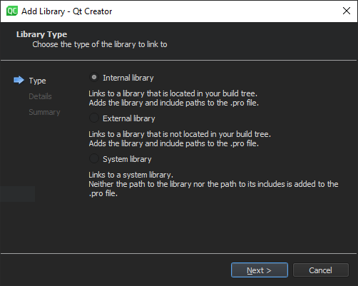
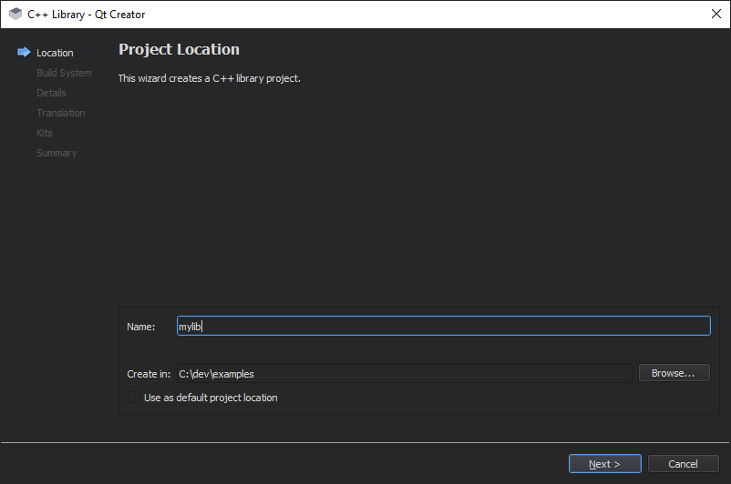

Adding Libraries to Projects
In addition to Qt libraries, you can add other libraries to your projects. The process depends on the type and location of the library. You can add a system library, your own library, or a 3rd party library. The library can be located either in the build tree of the current project or in another build tree.

Because system libraries do not typically change and are often found by default, you do not need to specify the path to the library or to its includes when you add it. You can use pkg-config to query system libraries during compilation.
For your own libraries and 3rd party libraries, you need to specify the paths. Qt Creator tries to guess the include path for an external library, but you need to check it and modify it if necessary. Qt Creator automatically adds the include path for an internal library.
For all libraries, select the target platforms for the application, library, or plugin.
Specify whether the library is statically or dynamically linked. For a statically linked internal library, Qt Creator adds dependencies (target_link_libraries when using CMake or PRE_TARGETDEPS when using qmake) in the project file.
Depending on the development platform, Qt Creator might detect some options automatically. For example, on macOS, it detects the library type (Library or Framework) automatically and hides the option. However, if you develop on another platform than macOS and want to build your project for macOS, you must specify the library type.
The default convention on Windows is that the debug and release versions of a library have the same name, but are placed in different subdirectories, usually called debug and release. If the library path does not contain either of these folders, you cannot select the option to place the libraries in separate folders.
Alternatively, the letter d can be added to the library name for the debug version. For example, if the release version is called example.lib, the debug version is called exampled.lib. You can specify that the letter is added for the debug version and removed for the release version. If the library name ends in d, deselect the Remove "d" suffix for release version option.
Qt Creator supports code completion and syntax highlighting for the added libraries once your project successfully builds and links to them.
To Add Libraries
- In the Projects view, right-click the project name to open the context menu and select Add Library.
- Follow the instructions of the wizard.
For more information about the project file settings, see Declaring Other Libraries.
Example of Adding Internal Libraries
To add an internal library to your project:
- Select File > New Project > Library > C++ Library.
- Select Choose to open the Project Location dialog.

- In the Name field, give a name for the library. For example, mylib.
- Follow the instructions of the wizard until you get to the Project Management dialog. In the Add as a subproject to project list, select a project. For example, myapp.
- In the Projects view, right-click the project name to open the context menu and select Add Library > Internal Library > Next.
- In the Library field, select mylib, and then select Next.
- Select Finish to add the library declaration to the project file.
When using CMake, the target_link_libraries command is added to the CMakeLists.txt file:
target_link_libraries(myapp PRIVATE mylib)
When using qmake, the following library declaration is added to the .pro file:
win32:CONFIG(release, debug|release): LIBS += -L$$OUT_PWD/../../../projects/mylib/release/ -lmylib else:win32:CONFIG(debug, debug|release): LIBS += -L$$OUT_PWD/../../../projects/mylib/debug/ -lmylib else:unix: LIBS += -L$$OUT_PWD/../../../projects/mylib/ -lmylib INCLUDEPATH += $$PWD/../../../projects/mylib DEPENDPATH += $$PWD/../../../projects/mylib win32:CONFIG(release, debug|release): PRE_TARGETDEPS += $$OUT_PWD/../../../projects/mylib/release/mylib.lib else:win32:CONFIG(debug, debug|release): PRE_TARGETDEPS += $$OUT_PWD/../../../projects/mylib/debug/mylib.lib else:unix: PRE_TARGETDEPS += $$OUT_PWD/../../../projects/mylib/libmylib.a